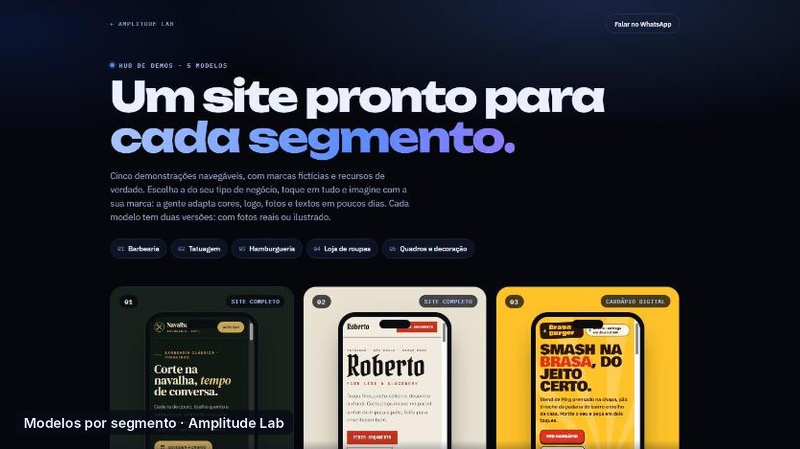
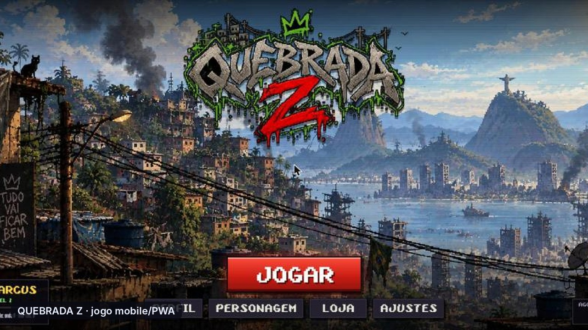

Artista
DARKY
Site do projeto de Bruno Martins: três projetos em um só lugar (Darky, Slowly, Obskurial), players, festivais, press kit e pedido de booking.
HTML · CSS · JS · direção de arte
Páginas de artistas, sites de negócios, um CRM com radar de leads e jogos em HTML5. Tudo desenhado e desenvolvido pela Amplitude Lab, com design, código e IA.
Press kit, sets, agenda e booking em uma página com a cara do artista.
Site do projeto de Bruno Martins: três projetos em um só lugar (Darky, Slowly, Obskurial), players, festivais, press kit e pedido de booking.
Página do projeto de Progressive, Hard e Hi-Tech: o BPM sobe conforme a rolagem e o campo de partículas pulsa junto.
Site de DJ de Progressive com estética cyber, vídeos verticais, gigs e press kit, em PT e EN.
Site de DJ de Psytrance com entrada sonora, release, jornada, galeria de festas e booking.
Produtora de áudio: logo em 3D, player de beats, trabalhos no Spotify e calculadora de orçamento que envia pelo WhatsApp.
Site de criador de conteúdo com 18 mil seguidores: modelagem, drone, massoterapia, lifestyle e parcerias, com vídeo de fundo.
Sites que vendem: orçamento guiado, vitrine e pedido direto no WhatsApp.
Site do estúdio com cenas 3D interativas, modelos rodando no celular e orçamento guiado.
Identidade visual completa (logos, cores, tipografia, avatar) e site de vendas com obras e orçamento.

ModelosCinco sites navegáveis: barbearia, tatuagem, hamburgueria, moda e decoração, cada um em versão ilustrada e com fotos.
Software de gestão feito para o pequeno negócio vender mais.
Painel, funil de vendas, agenda, propostas, financeiro e o Radar de Leads, que busca negócios sem site no mapa. Back-end em Supabase com RLS e Edge Functions.
Jogos de navegador e celular, do motor gráfico à trilha sonora.

Mobile · PWASobrevivência por ondas na quebrada, estilo CoD Zombies: campanha com chefes, economia, upgrades, sprites e áudio autorais.
Horror cósmico isométrico com motor próprio que transforma modelos voxel em pixel art, IA com A* e cidade procedural.